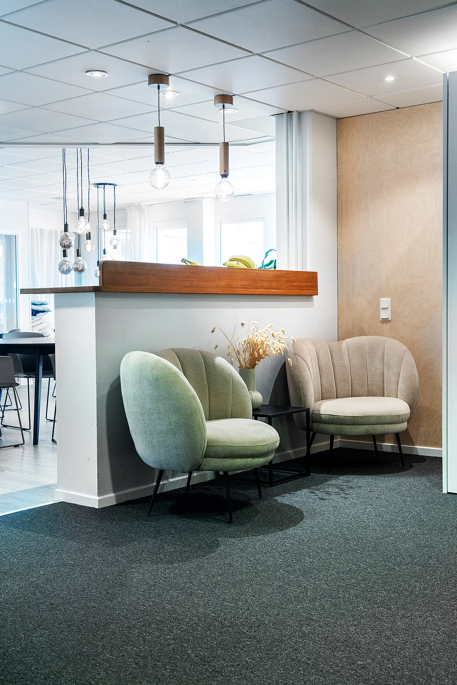

Psykiatrisk behandling
Medemus kommer från det latinska och betyder ”vi läker”. På min mottagning står patienten och hens individuella behov i centrum. För mig är det viktigt att kunna erbjuda ett personligt och professionellt omhändertagande. Genom ett nära samarbete med erfarna och kompetenta psykologer och psykoterapeuter erbjuder min mottagning individuella behandlingar med kontinuitet och korta väntetider.

Vi behandlar
Depression
Depression kan anses som en långdragen förändring i sinnesstämningen. Den drabbade lider av en sänkning av det allmänna stämningsläget i psyket och bär på en känsla av sorg.
Tillfällig nedstämdhet är en ofrånkomlig del av människans liv som svar på livets påfrestningar som tex efter förlust av en närstående person. I en del fall blir nedstämdheten dock allvarligare och längre, detta även utan att det finns en utlösande faktor eller att den utlösande faktorn inte står i rimlig proportion till stämningsläget. Vid sådana tillfällen pratar man om en depressionssjukdom. Skillnaden mellan de två tillstånden kräver noggrann klinisk bedömning.
Psykisk ohälsa bland kvinnor
Allt fler kvinnor drabbas av psykisk ohälsa. De vanligaste besvären är depression, ångest, sömnbesvär och utmattningssymtom.
Ångesttillstånd
Ångest är ett sinnestillstånd som karakteriseras av stark rädsla, nervositet eller oro, vare sig det är situationsbetingat eller inte, men som inte beror på ett faktiskt hot eller en överhängande fara.
Sömnbesvär
Sömnstörningar är problem som är relaterade till sömnen, till exempel sömnlöshet, sömnapné, mardrömmar, mm. Sömnstörningar är ett symtom som kan ha organiska eller psykiska orsaker och skall utvärderas.
Stressrelaterade besvär
Stress är de fysiologisk-hormonella anpassningsreaktioner i kroppens organsystem som utlöses av fysiska och mentala påfrestningar. Stress kan definieras som mental överansträngning.
Sexuella besvär
Sexuella problem har ofta psykiska orsaker. T.ex. är bristande lust ett vanligt symtom vid depression.
Psykiska problem hos äldre
Psykisk ohälsa är en av våra största folksjukdomar. Idag lider många äldre personer av psykisk ohälsa. De vanligaste sjukdomar är depression och ångestsjukdomar.